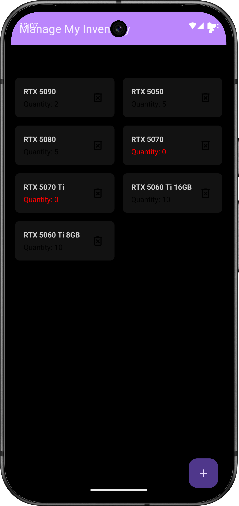
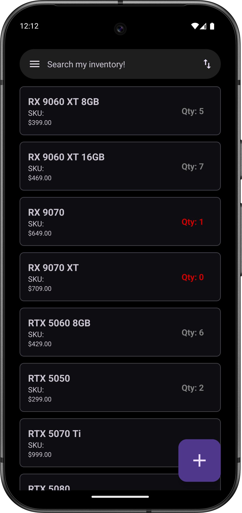
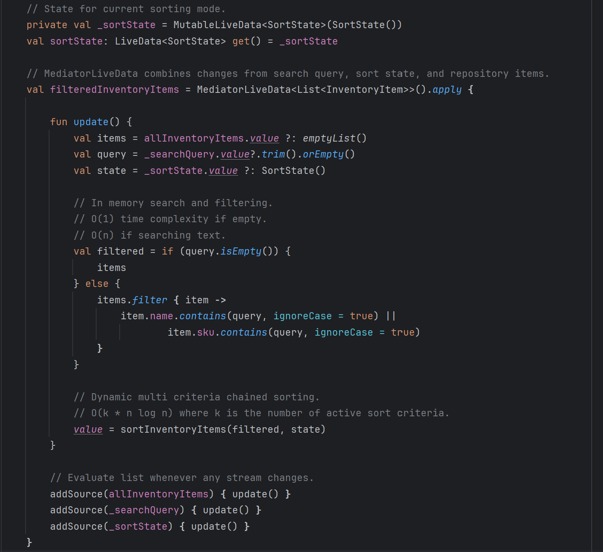
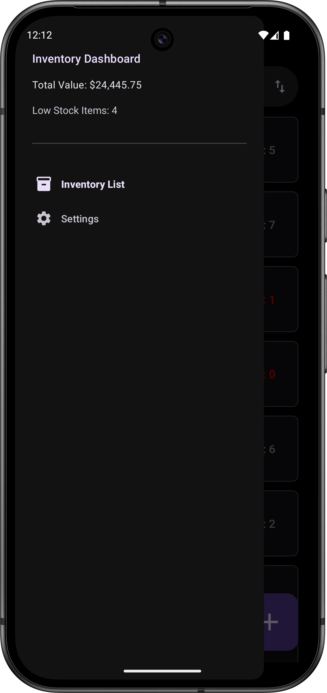
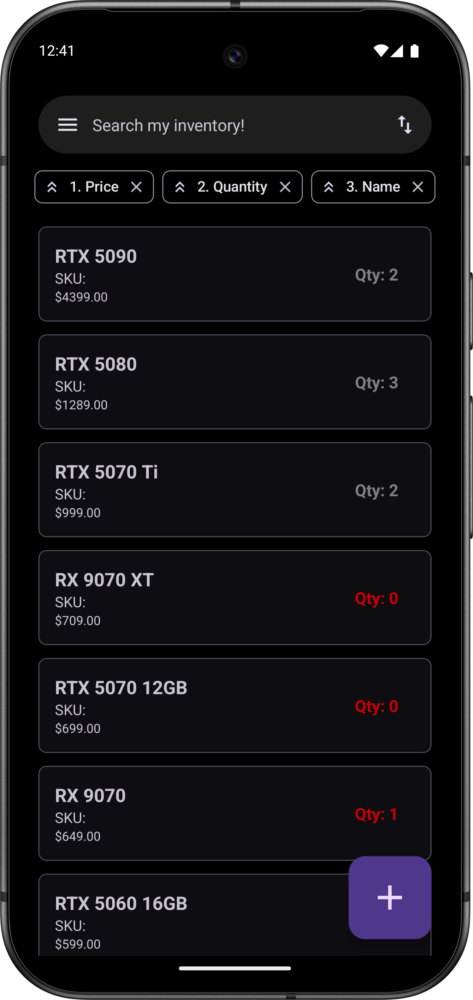
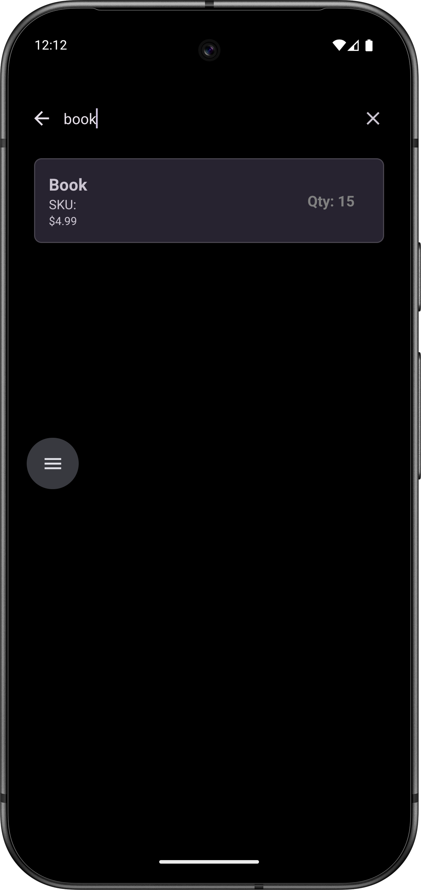
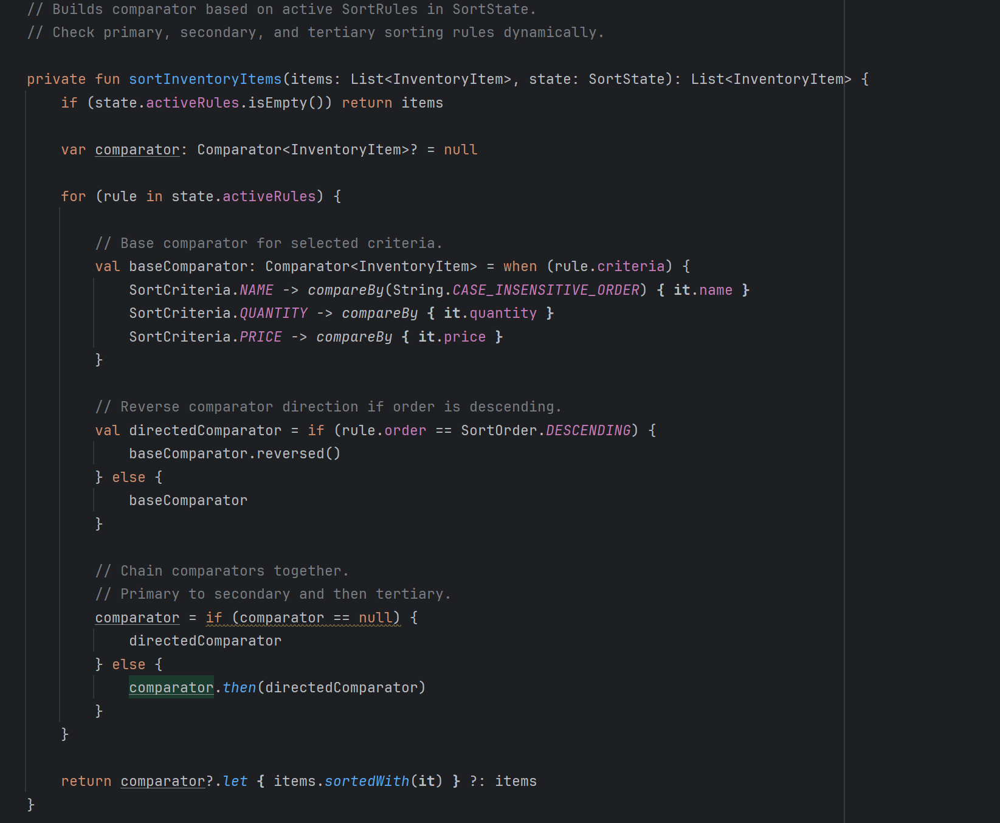
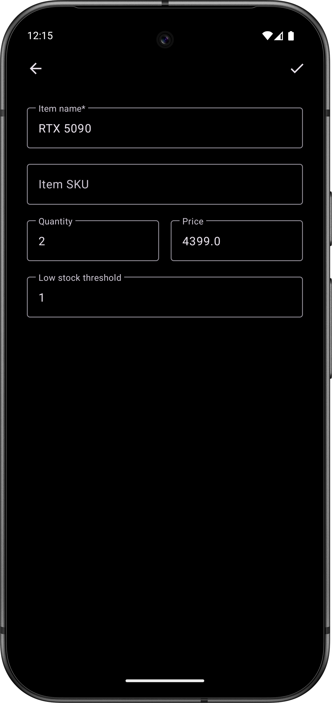
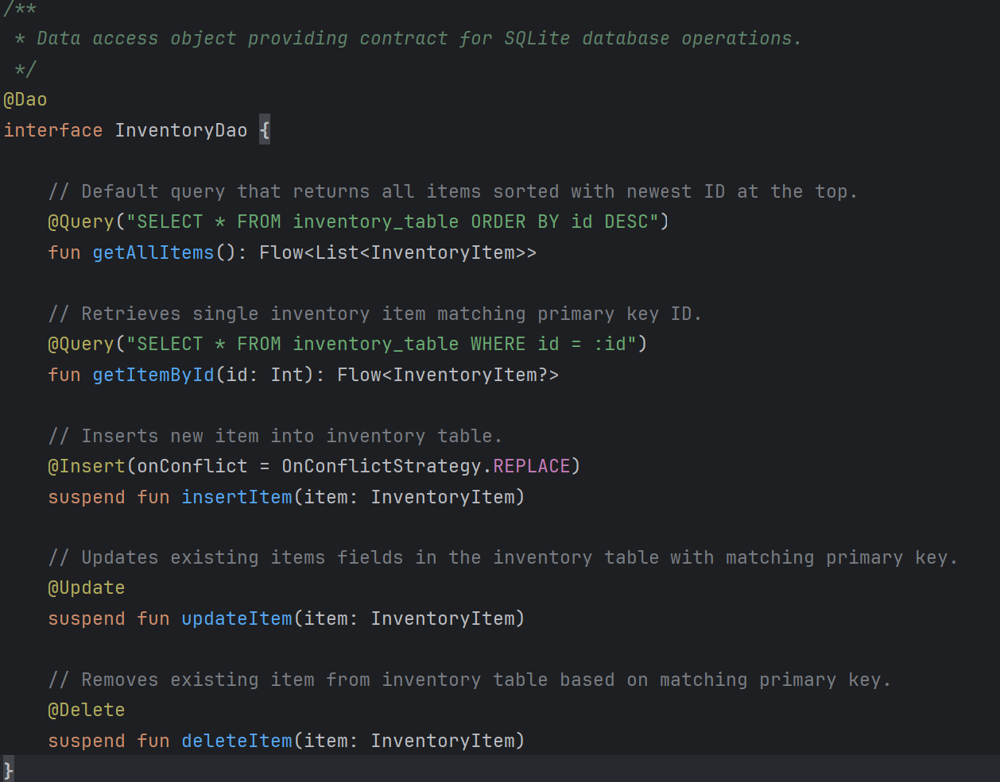
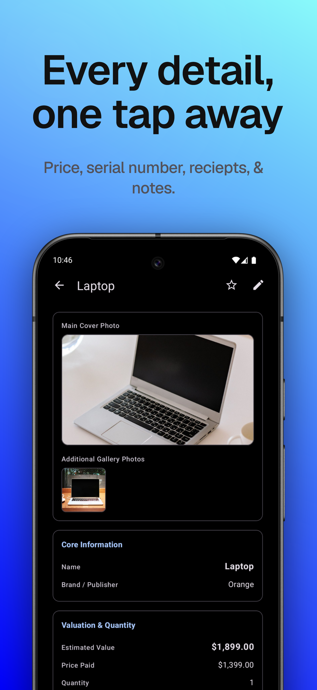

Professional Self-Assessment
Introduction
Completing my Bachelor of Science in Computer Science, building on my associate degree in information technology, has transformed my understanding of software development from primarily learning concepts to understanding how everything works together to creating real software solutions. Throughout the program, I developed skills in software engineering, algorithms and data structures, databases, security, testing, system analysis, and application development. More importantly, the program taught me to approach software development as a process of analyzing requirements, selecting appropriate technologies, designing maintainable solutions, testing implementations, and communicating technical decisions to stakeholders.
My primary professional goal is to pursue a career in software engineering. The coursework and capstone experience have prepared me for this by giving me experience working across multiple layers of an application rather than focusing exclusively on writing code. I have learned to consider architecture, performance, persistence, security, usability, maintainability, and testing as interconnected parts of software quality. Building my ePortfolio has also helped me recognize how these skills complement one another and have given me a way to demonstrate my capabilities through concrete examples rather than simply describing them on a resume.
Professional Skills and Computer Science Foundation
Courses such as CS 250: Software Development Lifecycle, and CS 255: System Analysis and Design, taught me that successful software development requires more than writing code. I learned the importance of requirements analysis, documentation, development processes, version control, and communicating design decisions. My capstone project further strengthened this perspective by requiring me to evaluate and enhance an existing past project while considering how architectural changes affect the system as a whole.
My coursework also strengthened my ability to translate technical requirements into understandable designs and explanations. Through system analysis, documentation, presentations, and project assignments, I learned to communicate not only what a system does, but why a particular decision was made and how it affects end users and stakeholders. This ability will be essential when working with others in a professional software environment.
During my CS 300: Data Structures and Algorithms course, I developed an ability to evaluate solutions based on computational efficiency, data organization, and complexity. Additionally, my CS 330: Computer Graphics and Visualization and CS 370: Current and Emerging Trends courses expanded this foundation through computational graphics and artificial intelligence, requiring me to apply mathematical and algorithmic concepts to more complex problems. These experiences taught me to consider performance and scalability rather than simply producing a solution that just works.
Courses such as DAD 220: Intro to Structured Databases, CS 340: Client/Server Development, and CS 360: Mobile Architecture and Programming, gave me experience with database design, SQL, NoSQL, APIs, MongoDB, data persistence, Python, Java, and various architecture designs. I have learned the importance of separating responsibilities within an application and applying patterns such as Model-View-Controller (MVC), Model-View-ViewModel (MVVM), and repository-based data access. These concepts became especially valuable during my capstone, where I applied architectural and database principles to improve my mobile inventory tracking application.
During my CS 305: Software Security and CS 320: Software Testing and Automation courses, I learned to treat security and reliability as fundamental parts of software development. I gained experience with secure coding practices, input validation, vulnerability awareness, and systematic testing. These courses reinforced the importance of designing software that not only performs its intended functions but also protects data and behaves predictably under unexpected conditions.
Portfolio Overview and Artifact Integration
The artifacts in this ePortfolio demonstrate how I progressed from learning individual computer science concepts to applying them within a complete software engineering project. The central artifact is my mobile inventory tracking application, originally developed during CS 360 and enhanced across all three areas.
The Software Engineering and Design enhancement demonstrates a complete rewrite of the application's architecture using Kotlin, MVVM, and modern Android navigation. The Algorithms and Data Structures enhancement demonstrates practical applications of multi-field sorting and linear inventory calculations. The Database enhancement demonstrates persistent data management using Room and SQLite while maintaining separation between the database, repository, ViewModel, and user interface.
Together, these artifacts demonstrate many areas of my technical ability. Software engineering demonstrates my ability to structure and maintain an application, algorithms demonstrate how I solve computational problems efficiently, and database development demonstrates how I organize, store, and retrieve information securely and reliably. Past coursework in areas such as system analysis, client/server development, security, testing, artificial intelligence, and computational graphics further demonstrate the breadth of my computer science journey.
Ultimately, this ePortfolio represents both what I have learned and my ability to apply that knowledge to a practical software development project. The Computer Science program has given me the technical foundation, problem-solving skills, and professional perspective necessary to pursue my goal of becoming a software engineer and to continue learning and growing within the field.
Code Review
Embedded below is my video code review, analyzing the original architecture and codebase of my Android inventory tracking application. Conducting this comprehensive review allowed me to identify technical deficiencies and structure a formal enhancement plan targeting three primary areas of computer science: Software Engineering and Design, Algorithms and Data Structures, and Databases.
Enhancement One: Software Engineering and Design
Chosen Artifact
The artifact I chose for my ePortfolio is an Android inventory tracking app that I originally developed during my time in CS360: Mobile Architecture and Programming course. The application allowed users to manage inventory items by creating, viewing, updating, and deleting products while tracking quantities and product information. It was developed using Java, Android Studio, and the Model-View-Controller (MVC) design pattern.
For this enhancement, I redesigned and rebuilt the whole application from the ground up using Kotlin, the Model-View-ViewModel (MVVM) design pattern, and Jetpack navigation components. This approach separates the user interface from the application's business logic, creating a more modular and maintainable codebase easier to expand and test (Figure 1.0).

(A) Original Interface

(B) Enhanced MVVM Interface
Justification for inclusion
I chose this artifact because it demonstrates my ability to apply software engineering principles to redesign and rebuild an application using modern Android standards. While the original application served as the foundation, I recreated the application from scratch, migrating the codebase from Java to Kotlin, redesigning the navigation, replacing the original activity-based structure with a fragment-based architecture, and implementing the MVVM design pattern to create a more maintainable and modular architecture. These enhancements allowed me to demonstrate my programming, critical thinking, and problem-solving skills to create a more effective solution.

Course Outcome Coverage
The enhancements completed for this artifact successfully meet the software engineering and design outcomes I established originally for the artifact, in particular, course outcomes two and four. I successfully ported the application to another language, implemented a better design architecture, and made the codebase more modular and maintainable (Figure 1.1).
Course Outcome Two: Design, develop, and deliver professional-quality oral, written, and visual communications that are coherent, technically sound, and appropriately adapted to specific audiences and contexts.
I achieved this outcome by producing enhancement narratives, documenting code, and verbally and visually providing a code review. These documents describe the transition from Java to Kotlin, the replacement from MVC to MVVM architecture, the implementation of dynamic multi-field sorting, and the integration of Room for local data persistence.
Course Outcome Three: Demonstrate an ability to use well-founded and innovative techniques, skills, and tools in computing practices for the purpose of implementing computer solutions that deliver value and accomplish industry-specific goals
I achieved this outcome by rebuilding the original Java application using Kotlin, and replacing MVC with MVVM architecture. I also replaced the original activity-based structure with fragments and Jetpack navigation. These changes improved separation of concerns and created a more modular and maintainable codebase.
Reflection
Enhancing this artifact reinforced the importance of designing software with maintainability and scalability in mind. Rather than focusing only on adding features, I focused on learning how to improve the underlying architecture to make the application more reliable and maintainable for future modifications. Throughout this enhancement, I also developed a deeper understanding of the MVVM design pattern and how it separates responsibilities within an application. I managed the application's state through a shared ViewModel which allowed different parts of the app to communicate independently from the user interface.
The main challenges I faced during development were navigation, lifecycle, and dependency issues.
Before I could get the app to build, I had to double check and make sure I had all the proper imports.
Thankfully, Android Studio is very smart and helps with this by highlighting errors in red and providing
a means to quickly import.
Then, when I got the application to build, I began testing it in the emulator.
The first thing I noticed after launching the application and trying to return to the
InventoryFragment
from the ItemDetailFragment was that it would take me to the home screen.
To solve this problem, I had to configure the OnBackPressedDispatcher in
MainActivity to work with the
application's NavController.
This ensured Android's navigation system remained in sync with Jetpack's navigation.
Another challenge I faced while working on this enhancement was scope creep. As I was porting over the codebase to Kotlin, I would naturally think of ideas and features that I would like to implement into the application. Rather than continually adding new features, I prioritized building a stable architectural foundation first. This experience reinforced the importance of controlling project scope and completing core functionality before expanding the application's features.
Enhancement Two: Algorithms and Data Structures
Chosen Artifact
The artifact I chose for inclusion in my ePortfolio for this enhancement is an Android Inventory Tracking application I originally created during the CS 360: Mobile Architecture and Programming course. The application allows users to create, update, delete, and manage inventory items while tracking quantities and other item details. For this enhancement, I expanded the application's algorithmic functionality by implementing more efficient collection processing, dynamic sorting, and real-time calculations using Kotlin collections and modern Android components.

(A) Data Aggregation Menu

(B) Multi-field Sorting

(C) Live Search Filtering
Justification for Inclusion
I selected this artifact because it demonstrates how algorithms and data structures directly impact app performance and usability. The original app did successfully manage inventory records, but did not incorporate any searching, filtering, or data aggregation algorithms (Figure 2.0). Therefore, with this enhancement I emphasized these and incorporated them into the app to bring more value to the end user.
One of the primary enhancements was implementing dynamic multi-field sorting using Kotlin collection
operations.
Rather than creating separate sorting routines for each field, I implemented comparator-based sorting
that allowed users to organize inventory items by name, price, or quantity in either ascending or
descending order (Figure 2.1).
This approach performs efficient in-memory sorting with a time complexity of O(n log n) while reducing
duplicated code and improving maintainability.

I also implemented real-time aggregation algorithms within the ViewModel to continuously calculate
inventory statistics (Figure 2.0A).
Each time the inventory data changes, the application performs a single linear pass through the
collection to calculate the total inventory value and determine the number of items that have reached or
fallen below their low-stock threshold.
These operations execute in O(n) time and automatically update the user
interface through LiveData
without blocking the main thread.
Another enhancement made to the application was implementing collection transformation pipelines for filtering and resetting inventory views (Figure 2.0C). Instead of modifying the inventory collection directly, the app applies filter predicates and sorting operations to produce the transformed inventory collection to the user. Maintaining an immutable dataset improves data consistency and makes the app's behavior more predictable and easier to maintain.
Course Outcome Coverage
The enhancements completed for this artifact successfully meet the algorithms and data structure outcomes I established originally for the artifact, in particular, course outcomes three and four.
Course Outcome Three: Design and evaluate computing solutions using algorithmic principles and computer science practices and standards appropriate to its solution, while managing the trade-offs involved in design choices.
My enhancements demonstrate this outcome by implementing efficient collection processing algorithms, comparator-based sorting, and linear aggregation techniques to organize and analyze inventory data. Evaluating the time complexity of these operations allowed me to select approaches that provide the best performance while maintaining clean code.
Course Outcome Four: Demonstrate an ability to use a well-founded and innovative techniques, skills, and tools in computing practices for the purpose of implementing computer solutions that deliver value and accomplish industry-specific goals.
To achieve this outcome the app was enhanced using Kotlin’s collection framework, LiveData, ViewModel, and other modern Android development practices. These technologies allowed me to separate algorithmic processing from the user interface while creating a more scalable and maintainable application.
Reflection
Enhancing this artifact strengthened my understanding of how algorithms and data structures influence both the app's performance and user experience. While the original application stored and displayed inventory data correctly, this enhancement required me to think more about how collections could be manipulated efficiently while keeping the user interface responsive.
One of the most valuable lessons I learned during this enhancement was how Kotlin’s higher-order functions simplify complex algorithmic operations without sacrificing performance. Implementing comparator-based sorting, filtering, and aggregation algorithms reinforced the importance of selecting the appropriate algorithm rather than relying on repetitive or inefficient coding practices to achieve the desired results.
One of my biggest challenges during this enhancement was integrating these algorithms into a reactive app architecture. Since the inventory data automatically updates the user interface through LiveData and ViewModel components, I needed to ensure that sorting, filtering, and aggregation operations remained in sync with changes to the inventory data. Solving these challenges improved my understanding of reactive programming, state management, and lifecycle-aware app design and how to properly approach these architectures.
Enhancement Three: Databases
Chosen Artifact
The artifact I chose for inclusion in my ePortfolio for this enhancement is an Android Inventory Tracking application I originally created during my CS360: Mobile Architecture and Programming course. This application allows users to create, view, update, and delete inventory items while tracking item information and quantities. The original version was created with Java and Android Studio and provided the main functionality needed to manage inventory data locally. For this enhancement I implemented Room, Android's object-relational mapping (ORM) library, to provide a safer and more structured interface between the app and its SQLite database (Figure 3.0).

(A) Item Details/ Add Item
(B) Item Persists In List
The enhanced database architecture includes an AppDatabase class, an
InventoryDao data access object, an
inventory repository, and database unit tests.
These components provide a clear separation between the app's UI, logic, and data persistence layers.
The application uses the Model-View-ViewModel (MVVM) pattern, allowing the ViewModel to communicate with
the repository rather than directly accessing the database like the original app.
This structure supports asynchronous database operations and makes the app easier to test and expand.
Justification for Inclusion
I selected this artifact for my ePortfolio because it demonstrates my ability to design, implement, test, and maintain a structured database solution. This artifact demonstrates how database concepts can be applied to solve a practical problem by allowing users to maintain accurate inventory records through a persistent local database.
Many components of this enhancement demonstrate my database skills.
InventoryDao for example, defines the database operations used by the app, including
inserting,
retrieving, updating, and deleting records (Figure 3.1).
By using a data access object, database operations are organized into a dedicated layer rather than
being distributed throughout the app.
This improves separation of concerns and makes the database code easier to understand, test, and
maintain.

The Room database implementation also provides a structured mapping between Kotlin data classes and SQLite database tables. Room reduces the amount of repetitive database code required by handling a lot of communication between the app and SQLite for us. It also provides compile-time validation of queries, which helps identify SQL errors during development. This improved the reliability and maintainability of the app's data layer.
The repository pattern was incorporated to create an additional layer of abstraction between the ViewModel and database. The repository manages access to inventory data and prevents high-level app components from depending directly on the database implementation. This design encourages codebase modularity and makes it easier to modify and expand later. The app also uses Kotlin coroutines and asynchronous data streams to perform database operations outside the main UI thread. This keeps the app snappy and smooth while inventory items are being modified or retrieved.
Another improvement performed during this enhancement was the creation of database unit tests for
InventoryDao.
The tests verify that essential database operations function correctly, such as inserting new items,
retrieving stored records, updating existing records, and deleting records.
Testing the data access layer helped confirm that the app could reliably store and manage inventory
information without physically testing on a real device.
This also emphasized the importance of validating database behavior independently from the UI.
Overall, this enhancement replaced a less structured approach to local data management with modern Room ORM architecture. This improved implementation provides stronger separation of concerns, compile-time query validation, and automated testing. These changes make the app far more consistent with Android development best practices and improve the quality and reliability of its database component.
Course Outcome Coverage
The enhancements completed for this artifact successfully meet the database outcomes I identified originally for this enhancement, in particular, course outcomes four and five.
Course Outcome Four: Demonstrate an ability to use well-founded and innovative techniques, skills, and tools in computing practices for the purpose of implementing computer solutions that deliver value and accomplish industry-specific goals.
The implementation of Room, SQLite, data access objects, repositories, Kotlin coroutines, and database unit tests demonstrates the use of established technologies and professional development practices to create a reliable data persistence solution. This enhanced database architecture supports the app’s primary purpose of allowing inventory information to be stored, retrieved, updated, and deleted consistently. This provides practical value by allowing users to manage records that remain available after the app has been closed or restarted.
Course Outcome Five: Develop a security mindset that anticipates adversarial exploits in software architecture and designs to expose potential vulnerabilities, mitigate design flaws, and ensure privacy and enhanced security of data and resources.
Even though the inventory app does not currently store highly sensitive personal information, I applied a security mindset by considering how the database architecture could reduce potential risks to data integrity and reliability. Rather than allowing different parts of the app to interact directly with the database, I implemented a structured data layer using Room, a dedicated data access object, and a repository. This design limits database operations to defined methods and creates clear boundaries between the UI, logic, and persistent layers.
Room also provides compile-time validation of database queries, which helps identify query-related errors during development before they cause unexpected errors or behavior when using the app. Also, Kotlin coroutines were used to perform database operations asynchronously rather than on the main app thread. This improved performance and ensured that database activity is handled separately.
The addition of InventoryDaoTest further supports my security and reliability mindset by
verifying that
database operations behaved as expected.
The tests evaluated the essential operations of inserting, retrieving, updating, and deleting records.
Testing these functions helps identify potential defects that could affect the accuracy and integrity of
stored records.
It also provides a repeatable method for detecting regressions in the future when I add more features to
the app.
Reflection
Enhancing the database component gave me a much stronger practical understanding of how modern Android apps organize, isolate, and manage persistent data. Before completing this enhancement, I only understood basic SQL operations. I have now learned how to integrate complete multi-layered MVVM database solutions. Implementing Room taught me how the ORM library can simplify communication between an app and its database while retaining performance with SQLite.
One of the most valuable lessons I learned was the importance of maintaining a clear separation of
responsibilities across app layers.
Isolating the database operations with InventoryDao, managing the data access through
RoomInventoryRepository, and keeping database logic separate from the UI layer made the
codebase easier
to read and test.
I learned that effective database engineering involves a lot more than just creating tables and writing
queries.
It also required careful consideration of data flow, app responsiveness, concurrency, data integrity,
and maintainability of the codebase over time.
A challenge I faced during this enhancement was managing asynchronous data streams and thread boundaries. Database operations should not run on the main UI thread because it can slow or stop the UI from responding. Integrating Kotlin Coroutines and asynchronous data streams required careful attention to how inventory data moved from the database through the repository and ViewModel before reaching the UI. Resolving these challenges strengthened my understanding of background processing and taught me the importance of multithreading.
Another challenge I encountered was configuring isolated database unit tests in
InventoryDaoTest.
Establishing an in-memory database instance allowed me to execute and verify insert, retrieve, update,
and delete operations independently of the UI.
Creating these tests verified the importance of automated testing and I learned a way to verify database
operations without relying on UI visual feedback.
These tests also provide me with a way to test for regressions in the future as I continue to expand the
app.
Overall, this enhancement has strengthened my skills in database design, asynchronous programming, software architecture, and automated testing. It also improved my understanding of how database design decisions affect the overall performance and integrity of the entire app.
Beyond the Capstone: Kept
From Capstone Project to a Real App
After the capstone, I kept building the inventory app. It is now Kept: Private Home Inventory, an Android app for tracking the things you own, from household belongings to collections such as vinyl records.
The capstone enhancements focused on architecture, algorithms, and persistence. Kept is about everything that comes with putting an app in front of real users: protecting their data, respecting their privacy, handling purchases, supporting multiple languages, and publishing a release on Google Play.

(A) Collections

(B) Grid and list layouts

(C) Item details
Technical Highlights
- Architecture: Kotlin with MVVM, fragment-based navigation, and Jetpack Compose for the settings, welcome tour, paywall, and barcode scanner screens.
- Data safety: Room with hand-written database migrations (currently schema version 7) and no destructive fallback, so an app update can never wipe a user's collection.
- Private by design: no accounts, ads, or analytics, and all data stays on the device. Barcode scanning uses the open-source zxing-cpp library, which decodes on the device. I chose it over Google ML Kit to avoid third-party telemetry, so Google Play Billing is the only component that uses the network.
- Monetization: a free tier plus an optional Pro upgrade (lifetime purchase or subscription) through Google Play Billing. Pro limits are enforced in the app's logic, and the last known purchase state is cached so a network problem never drops a paying user to the free tier.
- Everyday features: barcode and serial number scanning (with a picker when a code matches several items), warranty and expiry reminders using WorkManager, an optional biometric app lock, CSV import and export, PDF reports, and backup and restore.
- Quality and release: unit and instrumented tests, R8 code shrinking, seven languages, a signed app bundle, a completed Play data safety form, and a privacy policy hosted on GitHub Pages.
What I Learned
Building toward a real release taught me that finishing an app is its own discipline. Small details matter: keeping the list position after a delete, delivering scan results on the right thread, and making sure every claim in a privacy policy matches what the code actually does. Checking those claims against the app's merged manifest and its dependencies reinforced the security mindset from this program, because users trust the app with information about what they own.